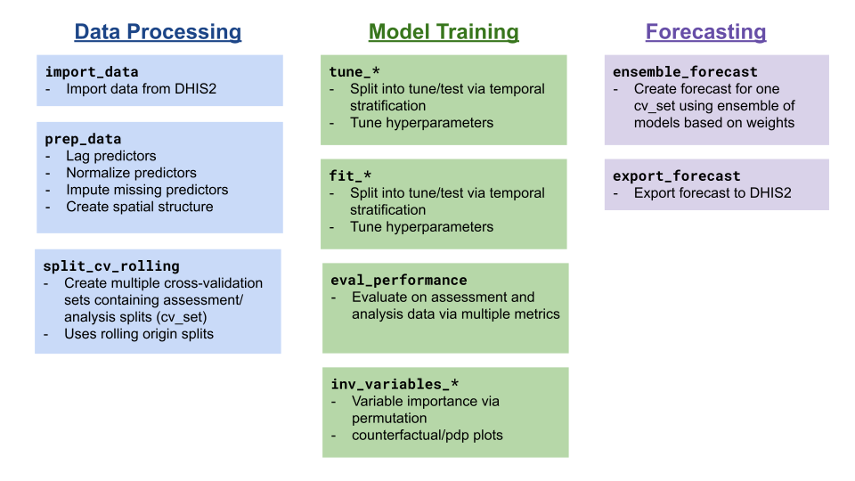

The goal of PRIDE-C is to provide a standardized API functionality for forecasting infectious diseases from DHIS2 data.
Installation
You can install the development version of PRIDEC from GitHub with:
# install.packages("devtools")
devtools::install_github("Pivot-Madagascar/PRIDEC-package")Example
TThe PRIDE-C forecasting approach follows the following steps:
- Data processing
- Model tuning and training
- Forecasting

The example below follows the steps for fitting a Random Forest model using ranger from simulated model data.
library(PRIDEC)
data(demo_malaria)
#preprocess data set
data_clean <- prep_data(raw_data = demo_malaria,
y_var = "n_case",
lagged_vars = c("rain_mm", "temp_c"),
scaled_vars = NULL,
graph_poly = NULL)
#> Registered S3 method overwritten by 'quantmod':
#> method from
#> as.zoo.data.frame zoo
#create a cv_fold of assessment (historical) and analysis (forecast) data
cv_set <- split_cv_rolling(data_clean$data_prep,
month_analysis = 48,
month_assess=3)[[20]]
#fit the model and forecast
rf_fit <- fit_ranger(cv_set,
y_var = "n_case",
id_vars = c("orgUnit", "date"),
pred_vars = c("rain_mm", "temp_c", "month_season", "orgUnit"))
#evaluate model fit
eval_performance(rf_fit)
#> Registered S3 method overwritten by 'scoringutils':
#> method from
#> print.forecast forecast
#> # A tibble: 2 × 10
#> dataset wis mae med_ae mean_ae_log wape dispersion sp_rho prop_over
#> <chr> <dbl> <dbl> <dbl> <dbl> <dbl> <dbl> <dbl> <dbl>
#> 1 analysis 5.86 6.42 0.321 0.0220 0.150 5.12 0.961 0.206
#> 2 assess 24.4 33.1 32.2 1.08 0.608 2.34 0.814 0.0317
#> # ℹ 1 more variable: prop_under <dbl>
plot_predictions(rf_fit[rf_fit$orgUnit %in% sample(rf_fit$orgUnit,1),])
#> Warning: Removed 1 row containing missing values or values outside the scale range
#> (`geom_point()`).Contribute to PRIDE-C
As an open-source package, we welcome all contributions. Please feel free to file an issue or contact the developer (@mvevans89).
Funding
The development and maintenance of this package is funded by a Wellcome Trust Digital Technology Development Award.